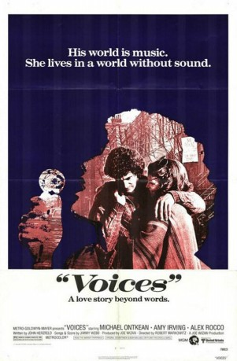

#11352 Stimmen der Liebe
Alternativ: Voices (Englischer Titel)
 
 IMDB-Wertung: 6.9 / 10
IMDB-Wertung: 6.9 / 10  Metascore: 0
Metascore: 0 
Erfolglos tingelt Sänger Drew (Michael Ontkean) mit seiner Band durch die Bars der amerikanischen Provinz. Als er die tanz-begeisterte und taube Rosemarie (Amy Irving) kennenlernt, verlieben sich beide. Gemeinsam wollen sie ihre Träume verwirklichen: Drew bewirbt sich in einem Club, und Rosemarie tanzt bei einer Ballettgruppe vor. Dabei verschweigt sie ihre Behinderung…
Jahr: 1979
Dauer: 101 Minuten
FSK: 6
Land: USA Studio: MGMTonspuren:
Untertitel:
Auflösung: 1080p (1440x1080) Größe: 4341 MB
Genre: Drama, Musik, Liebe
Regisseur: Robert Markowitz
Drehbuch: John Herzfeld
Soundtrack: Jimmy Webb
Darsteller:
 Michael Ontkean als
Michael Ontkean als  Amy Irving als
Amy Irving als  Alex Rocco als
Alex Rocco als - Barry Miller als
 Viveca Lindfors als
Viveca Lindfors als  Allan Rich als
Allan Rich als - Joseph Cali als
- Thom Christopher als
- Franc Luz als
 Bill Baldwin als
Bill Baldwin als - Rob DeRosa als
- Joanna Pang als
- Herbert Berghof als
- Rik Colitti als
- Jean Ehrlich als
- Thurman Scott als
- Melonie Mazman Hayden als
- Arva Holt als
- Hubert Kelly als
- Rory Anthony als
- Frank Lombardi als
- Dale Stroever als
- Peter Lawrence Cherone als
- Richard Kendall als
- Mary Serrano als
- Jerry MacLauchlin als
- Tom Quinn als
- Tony Munafo als
- Pedro O'Campo als
- Nelson Hailparn als
- Heidi Bohay als
- Jean Busada als
- Peggy Waller als
- Raymond Serra als
- José Rabelo als
- Thelma Lee als
- Ida Beecher als
- Ray Suideau als
Datei: X:\1979\Stimmen der Liebe (1979, FSK6, 1440x1080).mkv seit 24.06.2019
Festplatte: HD 1971-1979
 Es gibt insgesamt 29 Filme in der Gruppe '1979'
Es gibt insgesamt 29 Filme in der Gruppe '1979'